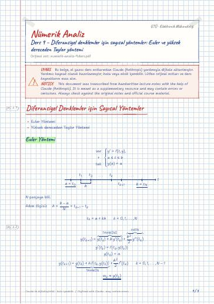

Numerical Analysis · Digital lecture note
Lecture 9 – Numerical methods for differential equations: Euler and higher-order Taylor methods
Nümerik Analiz – Ders 9 – Diferansiyel denklemler için sayısal yöntemler: Euler ve yüksek dereceden Taylor yöntemi
- Course
- Numerical Analysis (MAT214)
- Semester
- Semester 3 · Fall 2022–23
- Format
- PDF · 5 pages · 0.1 MB · handwriting-style LaTeX
- Language
- Turkish
- Original note
- numerik-analiz-9.ders.pdf
Open the PDF (0.1 MB)LaTeX source (.tex)Original handwritten note

What is in this note?
Section headings of the note (in Turkish):
- Diferansiyel Denklemler için Sayısal Yöntemler
- Euler Yöntemi
- Yüksek dereceden Taylor Yöntemi
Text of the note
Show as plain text (Turkish; formulas and drawings are not included)
Diferansiyel Denklemler için Sayısal Yöntemler
Yüksek dereceden Taylor Yöntemi
Bu başlangıç değer prob. çözümünün tahmini değerini adım boyu h = 0.25 olacak biçimde
(Bu sayfa, sayfa 2'deki tahtanın başka bir fotoğrafıdır; içerik aynıdır. Sağdaki panonun
kısmen görünen bölümü sayfa 4'te tam olarak aktarılmıştır.)
(Soldaki panolar sayfa 2 ile aynı; aşağıda sağdaki pano.)
(Aynı tahtanın daha erken bir fotoğrafı; kutuda yalnızca genel Euler formülü var:
Diğer içerik sayfa 2 ve 4 ile aynı.)
(Sayfa 5 ile aynı tahta; yeni içerik yok.)
(Aynı tahtanın daha erken bir fotoğrafı; yeni içerik yok.)
(Sayfa 1'deki tahta ile sayfa 4'teki Taylor panosunun birlikte fotoğrafı; yeni içerik yok.)
(Sağdaki pano: sayfa 1'deki başlık listesi – Diferansiyel Denklemler için Sayısal
Yöntemler: Euler Yöntemi, Yüksek dereceden Taylor Yöntemi.)
Yüksek dereceden Taylor Yöntemi
olmalı (bir alt satırdaki açılımda öyle yazılmış).
(Tahtada T^(n) 'deki (n) 'nin üstüne sonradan ``2'' yazılmış.)
(Sağdaki pano: sayfa 1'deki başlık listesi, tekrar.)
Yüksek dereceden Taylor Yöntemi
BDP 2. der. Taylor formülünü adım boyu h = 0.25 olarak yaklaşık çözün!
n = 2 için Taylor formülü
(Sayfa 10'daki tahta; `` n = 2 durumunda'' kısmına eklenen satırlar:)
Son satır tahtada yarım kalmış.Claude notu: h/2 = 1/8 olduğundan muhtemelen
(Sayfa 11'deki örneğin tahtası; eklenen kısımlar:)
(Bu fotoğrafta hocanın kapattığı son kısım, sayfa 21'deki fotoğraftan alındı.)
(Sayfa 11'deki tahtanın daha erken bir fotoğrafı; yeni içerik yok.)
(Sayfa 10 ve sayfa 9'daki tahtaların daha erken bir fotoğrafı; yeni içerik yok.)
(Sayfa 9'daki tahtanın daha erken bir fotoğrafı; yeni içerik yok.)
(Sayfa 10'daki tahtanın başka bir fotoğrafı; yeni içerik yok.)
(Sayfa 10 ve 12'deki tahta; T^(2) hesabının tamamlanmış hali:)
(Sayfa 11'deki tahtanın daha erken bir fotoğrafı; yeni içerik yok.)
(Sayfa 9'daki tahtanın başka bir fotoğrafı; yeni içerik yok.)
k = 3 ⇒ w_4 satırları henüz değersiz; w_k+1 ifadesinin sonu